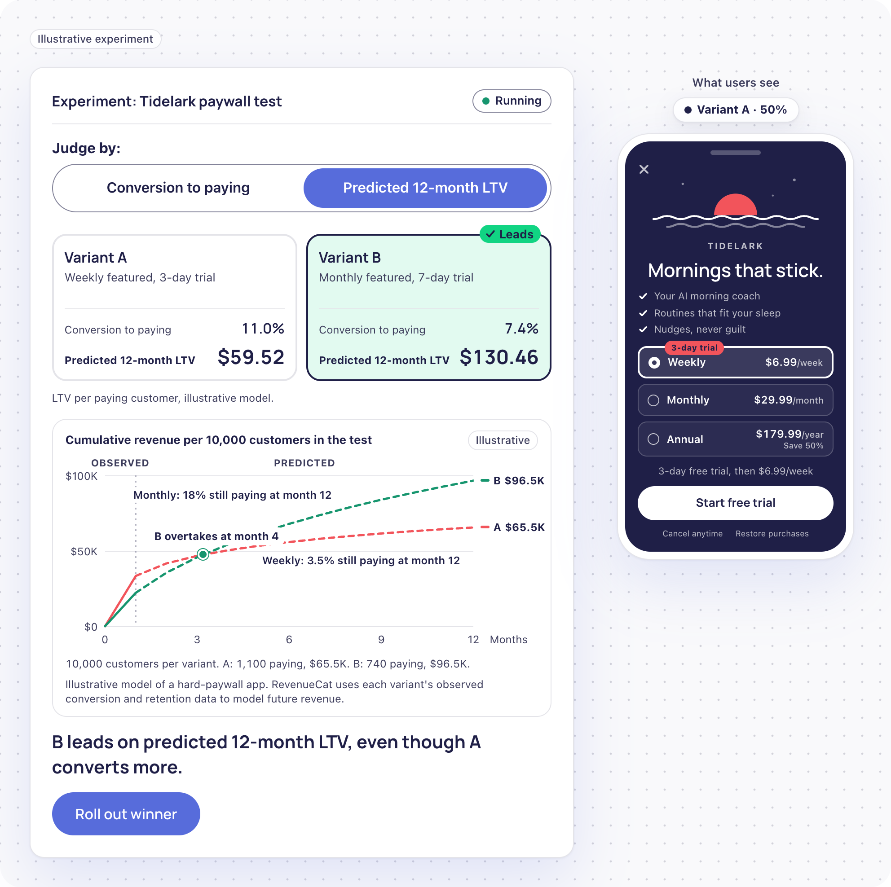

RevenueCat for Product Teams
How I refreshed the /for-product page: process, AI use and assumptions
- Live pagehttps://revenuecat-for-product-nu.vercel.app/
- Hero variant B2https://revenuecat-for-product-nu.vercel.app/?v=b2
- GitHub repohttps://github.com/oss1010/revenuecat-for-product
- Walkthrough videohttps://drive.google.com/file/d/10oRkwFzCkffgDtPeWxvfcEA1K8XBQIKQ/view
Summary
The diagnosis. The current page was written for a RevenueCat that took monetization off a PM's plate: "You ship what matters, we handle monetization." The product outgrew that: Paywalls, Experiments with predicted 12-month LTV, web funnels and web billing hand monetization to PMs. The page, like competitors' comparison pages, still describes the earlier product. One comparison lists four shipped capabilities as missing.
The positioning. Monetization is a product decision, and RevenueCat lets product managers make it like one. The principle organizes the page, unstated. Three jobs carry it: change it without a release, learn what users value, fit the offer to every user, on a foundation that handles the rest. Revenue is the outcome, not the PM's job title.
The page. Hero: "Build a subscription experience worth renewing." Eight headlines carry the argument; five dynamic modules include an experiment simulator where conversion and predicted 12-month LTV pick different winners.
- 14positioning directions tested, 1 kept
- 19hero lines considered, 1 kept
- 24agent reviews run
- 56claims failed by the audit and fixed
- Framing and researchRevenueCat's site, seven feature pages, five competitors
- Positioning14 directions tested, 1 kept
- The system5 agents, 1 context file, 1 pre-commit hook
- Architecture and copy8 page sections, 5 dynamic modules, 19 hero lines
- Build and verification8 phases, a red team, a final 48-claim sweep
How I worked
| Tool | Role |
|---|---|
| Me | Direction and judgment: the diagnosis of the current page, the positioning, 13 directions killed and one kept, the copy, what the page had to prove and what it could leave out, and every final call. The AI widened the options and checked the work. The calls drew on my own product and developer marketing experience, including at Unity. |
| Claude, in chat | Strategy partner: positioning, copy, red-teaming its own advice, reviewing agent output, extracting RevenueCat animation frames for the builder's motion study |
| Claude Code | The builder: every file, the five agents, git, headless-browser verification |
| GitHub | Public repo, with the full decision history |
| Vercel | Hosting, redeployed every push |
| Chrome DevTools and Font Finder | Sampling RevenueCat's live typography and colors |
Five review agents checked the work: pm-critic reads as three PMs, competitor-watch checks what competitors own, web-copy tightens copy, brand-guard checks RevenueCat's visual grammar, and claim-auditor traces every claim to a public source.
Three kinds of callout mark a collaboration running in every direction:
- I challenged the AI: where I overrode a recommendation
- The AI challenged me: where it pushed back and was right
- An agent caught it: where a review agent found what neither of us had
Framing and research
What I read first. RevenueCat's homepage, seven feature pages, pricing, changelog and docs (what shipped when), and the State of Subscription Apps 2026 report (plausibility checks). Then five competitors and two alternatives PMs weigh: building in-house, native store tools.
The competitive scan
| Vendor or alternative | How it pitches product teams | Evidence tier | Signature claim | Scale |
|---|---|---|---|---|
| RevenueCat today | "You ship what matters, we handle monetization" | Owned: its own PM page, with a message the product has outgrown | Engineering time saved on in-app purchases | 146K+ apps, $17B+ |
| Superwall | Dedicated PM page: own the monetization roadmap end to end, no app release or engineering queue | Owned (dedicated PM page) | Bills only on revenue through its own paywalls | $1.6B+ revenue, 10,000+ apps |
| Adapty | Financial decisions on accurate revenue analytics. No PM page | Claimed (homepage section: testing for revenue, not just conversions) | 12-month LTV and revenue prediction | Large, self-reported |
| Purchasely | The conversion problem is the whole first session, not one screen | Claimed | Onboarding journeys and personalized paywalls | Enterprise and media customers |
| Qonversion | A general PM page | Owned, weakly | No-code A/B testing | $1B+ served revenue |
| Apphud | Positioned as the RevenueCat alternative | Claimed | Revenue data accuracy | 14,000+ apps, $1B+ tracked, self-reported |
| In-house | No vendor fee, full control | n/a | "We already have engineers" | The default |
| Native store tools | Free and built in | n/a | Store-level experiments | Universal |
What the scan showed. The category converged on one PM promise, now table stakes: change the paywall without engineering, test it, read the analytics. RevenueCat's edge is leadership, not a unique feature: the most complete platform, a 12-month forecast inside the experiment, unmatched scale.
The lesson: where a claim lives matters
| Where the claim appears | What it means | Does it block RevenueCat from claiming it? |
|---|---|---|
| Dedicated persona page or homepage headline | Owned. They own that message to that audience | Yes. Don't lead with the same frame |
| Homepage section or feature page | Claimed. Strong but contestable | Only if RevenueCat can't prove it more completely |
| Docs, changelog, help center | Parity. A capability, not a position | No |
Positioning, and every direction I killed
Positioning took five rounds, each killing something for a specific reason. The reasons are more useful than the directions.
| Round | Directions tested | What killed them | Who killed them |
|---|---|---|---|
| Kept | Monetization is a product decision. RevenueCat lets product managers make it like one | Structure survived all three agents; failed as copy, stays internal | Validated by agents |
| 1 | Monetization as a product surface; "speed is table stakes, knowing what worked isn't"; "your app store isn't your only store" | The AI recommended a hybrid: spine, proof, chapter. Three decisions wearing one coat | I did |
| 2 | "You own the number, now own the controls"; "change the paywall today, know what it's worth in 12 months"; "conversion is the wrong number" | First: near-verbatim on Superwall's PM page. Second: merged Superwall's speed and Adapty's forecast claims | The competitor scan |
| 3 | "Decide on money inside the experiment"; "grow revenue on the system that already runs it" | Two competitors' docs already had revenue winners; retreating cast a leader as a challenger | The agent, then me |
| 4 | "Control of every monetization decision, judged on long-term revenue"; "monetization calls a PM can defend" | First: Superwall's owned language; its reason to believe suited only existing customers. Second: defensive, from one synthetic persona's worry, not real PM pains | Three agents, then me |
| 5 | "Monetization that evolves alongside the product"; "make more money" and "long-term revenue" | First: a pace comparison and process, not an outcome. Second: the homepage's promise, not the persona's job | I did |
An honest note. The final idea is close to round one's. What changed is underneath: it now comes from the PM's job, is structured by their real pains, and is differentiated by proof, not a clever phrase.
From seven pain points to three jobs
Seven PM pains map onto three jobs and a foundation, each a page section.
| The PM's pain | Job | What delivers it | Page section |
|---|---|---|---|
| Paywall changes queue behind engineering | Change it without a release | Paywalls, remote configuration, one-action rollout | 4, 5 |
| Not knowing which test result to trust | Learn what users value | Experiments with predicted 12-month LTV | 5 |
| Blind spots between acquisition and revenue | Learn what users value | Web funnel campaign tracking; Apple Search Ads keyword filters in Charts | 5, 6 |
| Monetization problems spotted too late | Learn what users value | Paywall charts, realized LTV per customer, Benchmarks | 5 |
| One offer for every user | Fit the offer to every user | Targeting, funnels that branch | 6 |
| Store commission pressure | Fit the offer to every user | Web billing | 6 |
| Store policy changes and refund abuse | Foundation | Refund Control, Apple and Google API changes handled | 7 |
The system: five agents and a context file
I built a small review system, not a prompt chain, so every claim, headline and visual was checked by something other than its author.
| Agent | Its job | What it caught |
|---|---|---|
| pm-critic | Reads as three PM archetypes | Validated the three-job structure; raised the enterprise governance question and product gaps |
| competitor-watch | Checks what competitors own | Killed a Superwall headline I planted as an unannounced calibration test. Flagged v0.1's core idea as Superwall's language |
| web-copy | Drafts and tightens copy | All 14 proposed cuts applied pre-build: about 85 words (11%) |
| brand-guard | Checks RevenueCat's visual grammar | Five phase 3B fixes, all applied: a leftover CSS rule breaking the funnel layout; page section 3 tabs, the largest blue fill; page section 7 icon tiles reading as the old feature grid; testimonials reworked into one centered block; a container narrowed from 1,200px to about 990px, RevenueCat's width. Verdict: reads as a RevenueCat page |
| claim-auditor | Traces claims to public sources | 56 fails in total, 4 in the final 48-string sweep. Among them: a nonpublic product name, an unattributed testimonial, "one click" where the product says "one action," Figma designs that arrive via a separate plugin, a Benchmarks band at 25th to 75th percentile where RevenueCat uses 20th to 80th, and "win-back," which RevenueCat uses for users already gone |
The context file. CLAUDE.md holds audience, non-negotiables, design tokens, contrast rules and color roles. Every session and agent reads it first.
Context states intent. Tooling enforces it. CLAUDE.md was created with an em dash, breaking its own rule, so the rule became a pre-commit hook. The AI in chat logged the hook as built before it existed, then caught it. Now it's real, and it blocks.
Architecture and copy
Architecture decisions
- The hero carries the idea; the sections carry the proof.
- Half static, half dynamic. The current page is all static imagery, and visual storytelling is judged first.
- One fictional app across every visual, Tidelark, a premium AI morning-routine coach: one story, not four unrelated ones.
- Zigzag layout for the job sections, like RevenueCat's feature pages.
- "Learn more" links to matching RevenueCat feature pages, so PMs can go deeper.
The hero: 19 lines considered, 10 shown
| Candidate | Verdict |
|---|---|
| "Build a subscription experience worth renewing." | Kept. A subscription is renewal by definition, so "worth renewing" says user value in two words. Top combined persona score |
| "Build the reason they renew." | Cheekiest line; lands best once the argument is made. Became the closing line and hero test variant |
| "Your paywall shouldn't wait for a release." | Strongest felt pain, but table stakes and close to Superwall's promise. Became page section 4's headline |
| "Change the paywall today. See its 12-month value." | Two unlinked ideas, and "change" is an activity, not a capability |
| "Test pricing like you test features." | No outcome, no benefit, no difference |
| "Ship the paywall that pays, not the one that converts." | A competitor claims revenue over conversion; "pays" reads as a guarantee |
| "Own your paywall without waiting on engineering." | Superwall's positioning, planted to test competitor-watch. It caught it |
| "Launch a paywall today. Judge it on the next 12 months." | "Today" isn't true for a first paywall; the first half sits on Superwall's promise |
| "Stop shipping paywalls that win the week and lose the year." | Sharpest idea, but opens by telling readers they're wrong. Became page section 5: "Win the year, not just the week." |
| "Build the subscription experience your users stay for." | The right idea. "Paywalls" narrowed it, "subscription experience" widened it |
The skimmer test
The headlines alone should carry the argument; the list doubles as the page map.
- Page section 1Build a subscription experience worth renewing.
- Page section 2Trusted by teams at [logos]
- Page section 3Change faster. Learn what renews. Fit every user.
- Page section 4Your paywall shouldn't wait for a release.
- Page section 5Win the year, not just the week.The test ends. The learning doesn't.
- Page section 6Different users. Different offers. App or web.
- Page section 7Subscribe once. Unlocked everywhere.
- Page section 8Two ways to start.
- Closing lineBuild the reason they renew.
The hero animation
The rebuilt loop follows the hero's sub in about eight seconds: Design changes the featured plan, Test runs weekly against monthly with B pulling ahead, Roll out fills a bar to 100%: "No app release."
The three-jobs module, three versions
First, three arrow rows: a table of contents posing as a section. Then tabs with a before-and-after slider, cut for a weak reveal. Then side-by-side panels. Change: before, Engineering and the App Store own most steps; with RevenueCat, every step says "You" and reaches "Live" first. Learn: dots, conversion to paying favoring A, predicted 12-month LTV favoring B. Fit: one paywall for everyone against the right offer per audience, app and web.
The first version showed who was still paying at month 12. Accurate, but at a glance it looked empty. The fix was a better unit, not rounder numbers: conversion before, predicted revenue after, the same two metrics as the simulator.
Build and verification
Stack. Static HTML, CSS and vanilla JavaScript on Vercel. One landing page needs no framework, and fewer moving parts meant fewer ways to break the night before the deadline.
| Phase | What got built | Checkpoint |
|---|---|---|
| 1 | Scaffold, locked copy, design tokens, first simulator | Worked first time |
| 1.5 | Visual grammar, proof points, simulator v2 | Colors sampled from RevenueCat's pages |
| 2 | PM copy, three-jobs tabs, first hero loop, zigzag layout | Modules verified by keyboard |
| 3A | Shared paywall, simulator v3 with forecast chart, new hero | Every illustrative number refit to published ranges |
| 3B | Charts module, visuals for page sections 3 to 7, brand-guard review | No placeholders left |
| 4 | Tighter hero, side-by-side three-jobs panels, compact simulator, line charts, web billing | Mobile simulator nearly halved |
| 5 | Red team; page section 7 rebuilt as the foundation; final three-agent review | 48 claims swept, 4 fixed |
| 5.1 | Final fixes from the agents' ranked list, including moving the Pixelcut quote | Design frozen |
| 5.2 | Three readability fixes after a final read | Dot counts recomputed from the model |
The simulator, four versions

| Version | What it did | What was wrong | Who caught it |
|---|---|---|---|
| v1 | A toggle swapped one metric and the winner flipped | Tension spanned only two moments. The rollout message sat on the user's phone, where users would never see it | The AI's review |
| v2 | Both metrics per card; the PM's panel split from the user's phone; a real paywall; a one-time cursor demo | It showed what won, not why. Numbers too small to feel real; the decision too obvious | I did |
| v3 | Forecast chart, observed month solid, predicted months dashed; B overtakes at month 4. A "why B wins" panel. Live traffic split on the phone | LTV averaged across every test customer read like a monthly figure; the module topped 2,100px on mobile | I did |
| v4 | LTV per paying customer ($59.52 against $130.46), math under the chart; the "why" on the chart lines; two-step rollout; cursor demo runs the whole sequence | Final. Mobile height down from 2,167px to 1,210px |
Brand: rebuilt, not reused
I studied seven RevenueCat feature pages and two product animations, then rebuilt the visual grammar in code, not their files: the work had to be mine, and RevenueCat would recognize its own assets. Colors and logos came from the press kit, checked against the live site. In production, I'd use the design library and brief the agency for new work.
- Surface colors sampled pixel by pixel from RevenueCat's pages: off-white #F9F9FB, a lavender and peach hero wash
- Color roles: blue for actions, green for winning and live states, red for emphasis
- RevenueCat's fonts are commercially licensed, so Manrope sets display and RevenueCat's declared fallback stack sets body
Verified: 390px first, then 1440px, in a headless browser when the preview wasn't visible. Keyboard, screen reader announcements, focus handling, reduced motion, every outbound link. Fixed: both paywall states showing at once, compound words breaking at hyphens on mobile, a toast covering the status line.
The red team: the new page against the current one
A red team attacks your own work the way a skeptical reviewer would. Here, that was me and Claude first, then all three review agents.
| Aspect | The current page | The new page |
|---|---|---|
| Promise | "You ship what matters, we handle monetization." Hand it off | "Build a subscription experience worth renewing." Own it |
| The PM's role | Bystander: RevenueCat saves engineering time | Operator: change it, learn from it, fit it |
| Structure | Seven feature tiles, then SDK setup steps | Three jobs from the PM's pains; the headlines alone tell the story |
| Proof | One CTO quote about engineering time | Pixelcut, Floga, OpenAI, and RevenueCat's scale: 146K+ apps, $17B+ processed |
| Visuals | Static screenshots | Hero loop, a simulator where the winner flips, live charts, web-to-app journey |
| New capabilities | One A/B testing tile | AI Editor, predicted 12-month LTV, one-action rollout, Funnels, web billing, Benchmarks |
What it found, and what changed:
- Page section 7 broke the story. "Decide who can change a live paywall" was a governance feature repeating a page section 4 bullet beside an unrelated visual. It became the foundation: "Subscribe once. Unlocked everywhere."
- Two truths from the current page had gone missing: Customer Center, and Apple and Google API changes handled for you. On a page promising "worth renewing," losing the retention feature was a real gap. Both returned in page section 7.
- One pain had no home. Blind spots between acquisition and revenue now map to web funnel campaign tracking.
- Density. The web-to-app journey went from seven steps to four at half the height; tabs stopped scrolling sideways on mobile.
All three agents then reviewed the finished page. pm-critic: a clear win over the current page for solo and growth PMs, partial for enterprise, prompting a security and compliance link on the Enterprise card. brand-guard: no contrast or color-rule failures. claim-auditor: 48 strings, 4 failed, all fixed.
What I'd do next
With more time
- Put it in front of real PMs. Five PMs from target accounts and existing customers, one task: read only the headlines, then say what RevenueCat does for them. Their words, not synthetic personas, would set the next round of copy.
- Run the first two tests. The hero, 'worth renewing' against 'the reason they renew', on sign-up rate from the page. And the link for existing customers, on dashboard clicks, then first paywall published.
- Build a guided demo. The simulator is a small version of it: pick your app category, build a paywall from a template, run a simulated test, roll out the winner. Five minutes, no account, no SDK. The current page's demo dashboard link now lands on a login screen; this would replace it. One rule: it answers only from RevenueCat's own data and docs.
Three questions I'd bring to Product
All three are about trust in the forecast, the page's central claim.
- Could there be a public page on how the 12-month forecast is made? The audit found none, and it's the first page I'd write.
- Could the forecast show a confidence range? Credible intervals currently cover conversion metrics only.
- Could benchmarks sit inside the decision? Showing how a variant compares with similar apps answers 'is my number any good?', a question only RevenueCat's scale can answer.
Appendix
Assumptions
- The page serves prospects and existing customers in an unknown mix. It leads for prospects, with one link for customers.
- Primary conversion: self-serve sign-up. Sales is secondary.
- PMs own the product experience and strategy. Revenue-number ownership varies by company size.
- Only public, shipped capabilities are claimed, none from a roadmap.
- All product data is illustrative and labeled. Tidelark is fictional.
- RevenueCat's fonts are licensed; the page substitutes.
What I couldn't verify
Real traffic, customer interviews and internal data. The PM personas are synthetic, their feedback treated as hypotheses.
Key sources
RevenueCat pages
Docs and changelog
Competitors
The report
Every source the audits used is in docs/iteration-log.md.